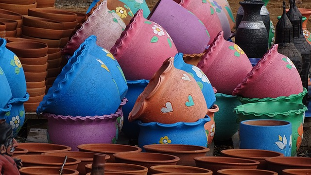
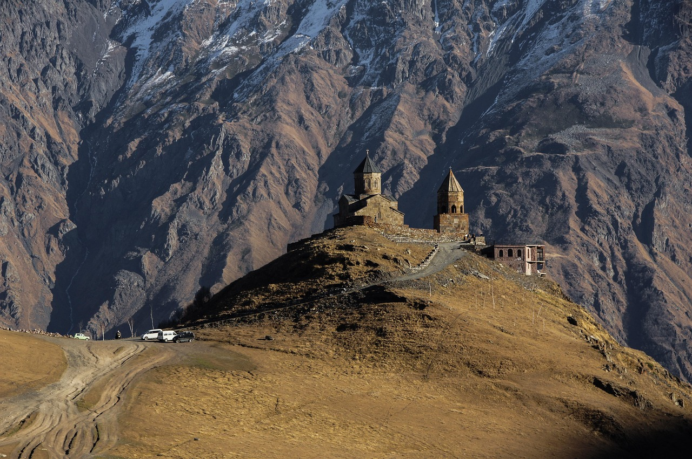
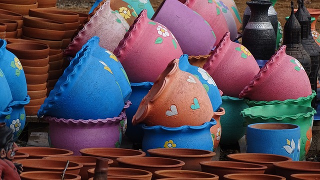
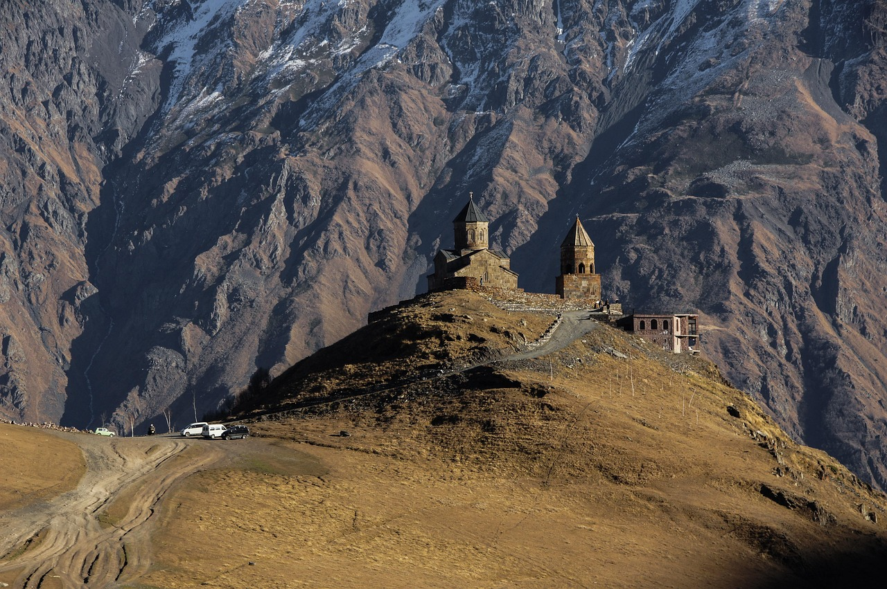

Zarówno Gruzja, jak i Armenia szczycą się niezwykle bogatą kulturą. Tradycyjne festiwale, takie jak Tbilisoba w Gruzji czy Vardavar w Armenii są powszechnie znane na całym świecie. Podczas naszej wycieczki spotkamy się z lokalnymi mieszkańcami, skosztujemy ich kuchni, w tym słynnych gruzińskich chinkali i chaczapuri oraz armeńskiego lawaszu i dolmy. Odkryjemy także sekrety lokalnych tradycji, takich jak słynne toasty wznoszone przez tamadę podczas gruzińskich uczt. Ponadto weźmiemy udział w warsztatach rękodzieła, gdzie będzie można spróbować swoich sił w tworzeniu tradycyjnych ozdób i naczyń. Zobaczymy również wyjątkowe występy muzyczne i taneczne, które wprowadzą nas w atmosferę regionu. Na koniec odwiedzimy lokalne targi, pełne aromatycznych przypraw, ręcznie robionych dywanów i unikalnych pamiątek.
 Biuro Podróży Kraken
Biuro Podróży Kraken
 


